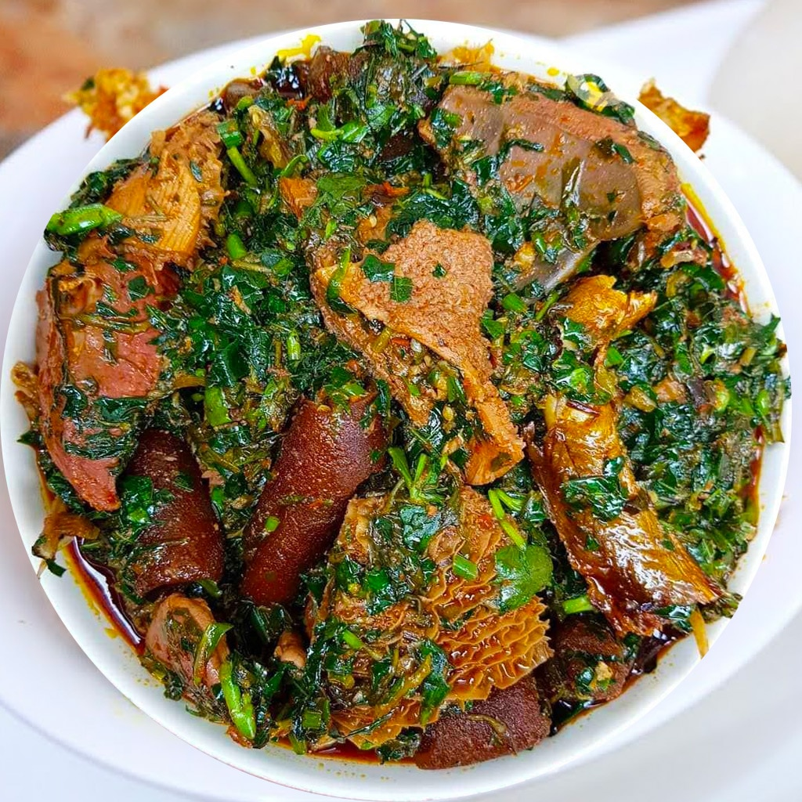

Afang Soup Recipe

Description
Afang soup; a delight to behold and to eat. It is a special delicacy of the Efik and ibibio tribes of Nigeria. Some parts of Cameroon bordering that part of Nigeria also enjoy this delicacy.
Afang Soup is soup is a soup rich in meats and vegetables and palm oil. If you are averse to palm oil then this soup may not be for you. Some people actually make this oil free but Noooo I can't make this soup oil free lol. Oil compliments most vegetable soups like Afang and Edikang ikong. Having tasted Afang with oil. I doubt you can convince me to ditch the oil in this recipe.
Ingredients
- 4-6 cups Meat Stock (Add more water as needed)
- ½ cup Ground crayfish
- >½ Tbsp Cameroon pepper
- 1-½ to 2 cups palm oil
- 2 large onions chopped
- 300 g beef or roasted turkey pre-cooked
- 350 g cow feet pre-cooked
- 350 g stock fish pre-cooked
- 2 cups frozen cooked shrimps (optional)
- 907 g frozen spinach
- 500 g ground okazi
- 2 teaspoons Bouillon powder (adjust to taste)
- ½ teaspoon salt (adjust to taste)
- 2 pieces of Dried fish cleaned and deboned. (optional)
Steps:
- In a large pot, heat the palm oil on medium for a minute and then add the Une.
- Slowly add the stock and set on low heat to simmer.
- Scoop teaspoon size balls of the egusi paste mixture into the stock. Be sure to keep ball shape.
- Leave to simmer for 20 – 30 minutes so the balls cook through.
- Add the meat and fish and other bits which you’d like to use.
- Add cut-up pumpkin leaves.
- dd the waterleaf.
- Stir and put a lid on the pot and allow cook for 7–10 minutes, till the leaves wilt.
- Add the bitter leaf. Leave the lid off while the cooking finishes for another 5-10 minutes.
- Stir, check seasoning and adjust accordingly.
Now you can sit back and enjoy your delicious Nigerian Egusi Soup!